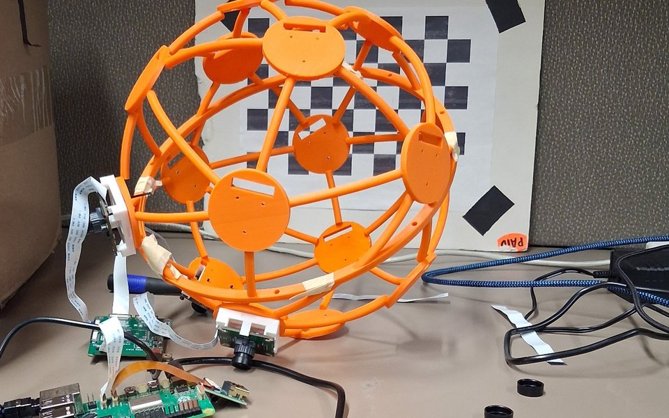

Master's student in Applied Artificial Intelligence, Northeastern University Research contributor, LEMS, Brown University
Computer vision, generative modeling and machine learning for computational biology and autonomous systems.
Welcome! I'm a Master's student in Applied Artificial Intelligence at Northeastern University. Before this, I received my B.S. in Information Technology from Purdue University Global. I am currently applying to PhD programs for Fall 2027.
Generative drug designGenerative genomicsProtein & peptide design
Where they meetUncertainty & calibrationClosed-loop discoveryActive perception
Research

GPS-Denied Visual Navigation for Drones
Prof. Benjamin Kimia's group, LEMS, Brown University Research contributor, 2026 to present
Ongoing
Localizing a fast-moving drone without satellite navigation, where motion blur and low texture starve any single view of features. The approach integrates many synchronized views with inertial cues, so every downstream estimate inherits the geometry and timing of the camera rig.
My part. I own the multi-camera sensing layer the visual pipeline rests on: hardware bring-up of a synchronized camera array on a Raspberry Pi 5, camera calibration, and frame-level time synchronization, with calibration and test code contributed to the group's repository.
Multi-camera systems, camera calibration, time synchronization, visual–inertial navigation
Calibration-Aware Active Learning for Closed-Loop Discovery
Independent research, self-directed Bridges autonomous decision-making and computational biology
Preliminary result
A self-driving lab is a control loop: a model proposes candidates, a system tests a subset, and the results retrain the model. I simulated that loop over 2,311 PTP1B inhibitors from ChEMBL and asked whether calibrating the scoring model makes it more efficient.
Result. It does not: 35.5 ± 3.5 hits versus 35.3 ± 4.2 at a 360-experiment budget, and for single-objective selection it hurts. The mechanism is resolution loss: isotonic regression is monotone but piecewise constant, so it collapses 1,844 distinct scores into 74 and leaves 100 molecules tied at exactly 1.000, making batch selection arbitrary among them. One target and 8 seeds so far.
Active learning, calibration, sequential decisions, ChEMBL, RDKit
Classifier-Guided Diffusion for Post-Stroke Drug Design
Independent research, Northeastern University Began as a project in Applied AI (AAI 6600, Prof. Elena Izotova), 2026 to present
In progress
No effective treatment exists for the glial scar that blocks axon regrowth after stroke. This project adapts the diffusion-and-classifier machinery of computer vision to drug design: a diffusion model generates candidate small molecules, while machine-learned property classifiers predict brain penetration, target activity and toxicity and steer every denoising step.
Design. Guidance classifiers are trained on noised inputs, and a separate held-out classifier judges the final candidates, so the generator cannot succeed by exploiting its own guide. Every scorer will be evaluated on scaffold splits, so reported performance reflects new chemistry rather than memorized analogs. PTPσ has only 34 usable activity labels, so related phosphatases serve as labeled neighbors. Fully in silico; no model results yet. Planned extensions. The same guided-diffusion framework is designed to carry over to peptide and protein binders and, in a later stage, to generative genomics, steering sequence generators toward gene-regulatory and gene-editing designs that could support repair of injured neural tissue; none of this has been started.
Does Human Alignment Make a Network's Confidence More Reliable?
Independent project, Northeastern University November 2026
Completed
Networks that rely on the image regions humans mark as diagnostic are not obviously better at knowing when they are wrong. I tested this on 1,500 ClickMe images with eight pretrained ImageNet networks, with the hypotheses and tests written down before any model was run.
Result. The published trade-off between accuracy and human alignment reproduced (Spearman −0.74 across models), but image-level alignment added no information about errors beyond confidence in any of the eight models. A secondary measure of reliance on human-marked regions showed only a weak, non-robust signal in the newest architectures.
NUWave: Deep Perception and Sensor Fusion Underwater
Team project, Northeastern Marine Robotics (student club) MATE ROV competition team, 2026 to present
Ongoing
Underwater perception for a semi-autonomous ROV, where turbidity, refraction and changing light break assumptions that hold in air.
My part. I develop deep-learning object detection and visual–IMU sensor fusion in the ROV's ROS perception stack, including the recognition node and its automated tests.
Deep object detection, visual–IMU fusion, ROS, OpenCV, I²C and UART
Course project, Applied Deep Learning (AAI 6640), Northeastern University Team lead of four
In progress
A recurrent network that forecasts a full probability distribution rather than a point estimate, so any threshold question is read straight off the model. It extends the GARCH–LSTM equivalence of Zhao et al. (2024) with an in-cell variance recursion and a Student-t output head.
My part. I lead the team and own the ten-year dataset and the evaluation: purged walk-forward splits, isotonic recalibration and conformal coverage.
I'm glad to hear about research collaborations and PhD openings in computer vision, generative modeling, machine learning, computational biology and autonomous systems.